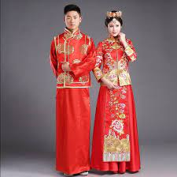
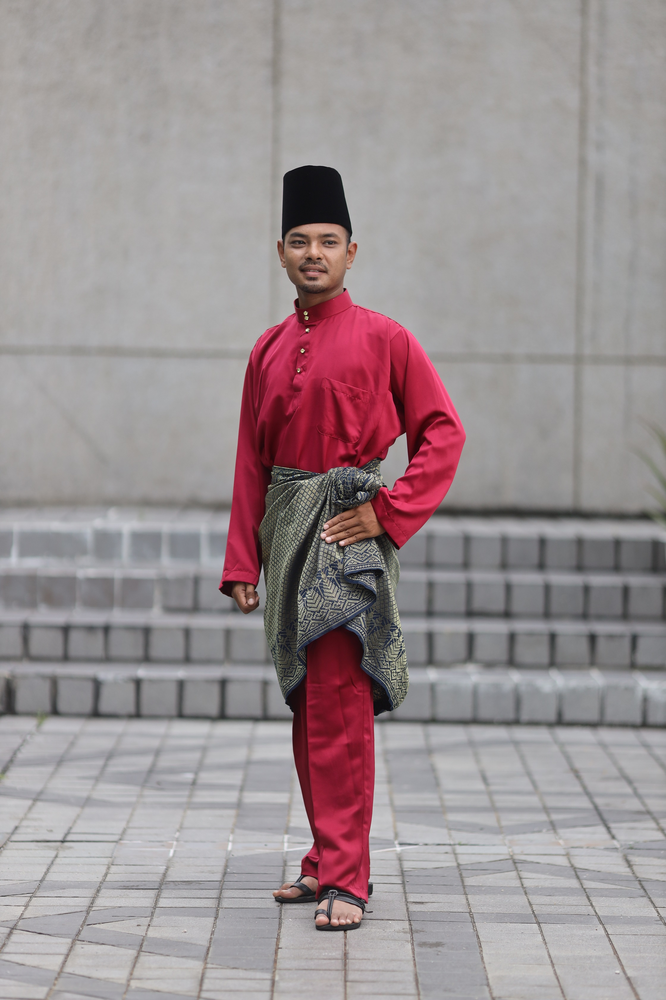

English
Pakaian Tradisional Malaysia
1. Samfoo

- Samfoo merupakan salah satu jenis busana tradisional untuk kaum Cina.
- Baju Tradisi Cina atau pun Samfoo menjadi pakaian yang digemari oleh lelaki Peranakan Cina pada hari ini.
Baju ini dipadankan dengan seluar slack yang longgar dengan warna-warna yang sesuai.
Baju ini diperbuat dari kain satin dengan tekstur moti-motif tradisi kaum Cina.
Baju berbelah depan berkolar ini dijahit longgar dan dipasang dengan butang-butang simpul yang cantik dan kemas.
- Baju Cina atau Samfoo ini dipakai oleh sebilangan kaum Peranakan Cina atau Baba Nyonya Melaka di hari-hari perayaan dan majlis-majlis keramaian.
Untuk Samfoo, warna merah sering dipilih sebagai warna yang membawa tuah tetapi warna-warna lain masih tetap digunakan tetapi warna hitam selalunya dielakkan.
2. Baju Pengantin Negeri Sembilan
- Busana yang dipakai oleh pengantin perempuan dalam masyarakat Melayu adat perpatih di Negeri Sembilan adalah diantaranya Baju Kurung Labuh,
Baju Kebaya Panjang dan Baju Kebaya Setengah Tiang. Material kain yang sering digunakan ialah kain tenunan songket bunga tabur atau penuh, kain broked dan kain tenun.
Padanan dengan baju ialah kain.
- Busana pengantin perempuan digayakan dengan Sanggul Lintang atau ‘sunting’. Sunting merupakan hiasan kepala yang diperbuat daripada tembaga atau zink yang dicelup emas.
Terdapat pelbagai bentuk sunting antaranya bermotifkan bunga, tumbuh-tumbuhan, bentuk unggas dan haiwan seperti burung, ikan dan rama-rama.
3. Baju Kurung Pahang
- Kurung Pahang mempunyai pesak yang kembang. Busana ini dicipta pada era 1880-an. Baju ini asalnya dipakai oleh puteri-puteri istana dan golongan bangsawan
kerana ianya bersifat eklusif di mana fabrik yang digunakan ketika itu ialah dari kain tenun Pahang sepasang dan juga dipadankan dengan kain songket yang dilipat
pinjung sebelah kanan.
- Yang membezakannya dengan baju kurung yang lain ialah busana ini tidak mempunyai kekek tapi diganti dengan Pesak Gantung. Perhiasannya pula dikenakan dengan
cucuk sanggul dan bunga di kepala bersama dokoh di dada dan kerikam (selendang pendek) di atas bahu.
4. Baju Melayu Cekak Musang

- Sepasang Baju Melayu Cekak Musang dari jenis satin jenis kosong atau berjalur berpotongan lengkap dengan pesak dan kekek, berkolar tinggi bulat dan
sedikit terbelah di bahagian hadapan dengan dihiasi 5 biji butang serta berkocek 3 iaitu satu kecil di dada dan 2 besar di bahagian bawah pinggir baju.
- Dipadankan dengan seluar dari jenis kain yang sama dan digayakan dengan kain samping songket dengan ikatan gulung kembung.
Manakala songkok dipakai sebagai penyeri dan pelengkap pakaian sewaktu menghadiri majlis rasmi dan hari keramaian.
5. Baju Panglima
- Baju Dagang Luar Si Awang Sulung dan berseluar silat. Dipakai bersama tanjak ikatan ‘Anak Gajah Menyusu’ dan pemakaian samping ikatan ‘Panglima’
dikemaskan dengan lilitan bengkung. Dilengkapkan dengan ‘Golok Perak’ sebagai senjata dan beralas kaki dengan memakai kasut capal.
6. Kebaya Labuh Nyonya
- Baju Kebaya Labuh Nyonya di Melaka disebut juga sebagai Baju Panjang atau Baju Belah Panjang. Lazimnya dipakai oleh Nyonya Peranakan dan juga kaum Chetti yang
dipadankan dengan kain batik atau kain corak pelikat. Fabrik yang digunakan untuk membuat Baju Panjang ini ialah dari kain kasa jarang.
Maka itu anak baju berwarna putih atau warna lain yang cerah, berkolar tinggi dan berhias renda dipakai di bahagian dalam baju.
- Perhiasan kepala yang dipakai ialah cucuk sanggul dan sikat yang diperbuat dari emas atau perak bercelup emas.
Sehelai sapu tangan besar digayakan di atas bahu sebagai kelengkapan Baju Panjang ini.
- Baju Panjang ini masih dipakai oleh nyonya yang berumur hingga ke hari ini ketika menghadiri upacara perkahwinan tradisi dan majlis rasmi keraiaan.
Selain dari itu ianya juga dipakai sebagai pakaian untuk seni persembahan.
7. Pakaian Tradisional Kadazan Penampang
- Pakaian Tradisional Suku Kaum Kadazan Penampang dikenali sebagai 'Sinuangga' yang dipakai oleh kaum wanita dan 'Gaung' untuk para lelaki.
Baju ini selalunya menggunakan kain hitam (kain baldu) yang bersulamkan benang emas. Ia dipakai semasa sambutan Pesta Menuai atau dikenali sebagai perayaan
‘Tadau Kaamatan’ pada hujung bulan Mei setiap tahun. Sewaktu perayaan ini, diadakan pelbagai acara seperti pertandingan ratu cantik ‘Unduk Ngadau’,
di mana para peserta akan memperagakan pelbagai jenis busana tradisi suku kaum Kadazandusun.